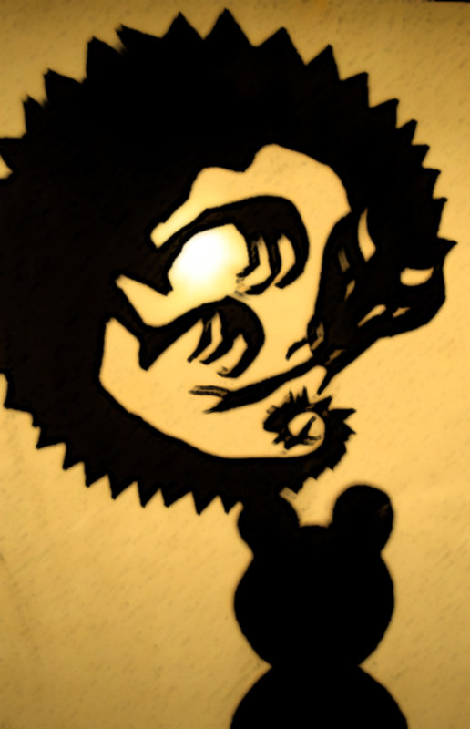

She can adapt to her surroundings, acting as camouflage, which helps her ever so frantic personality scramble for more inspiration for her inventions. Additionally, given her ability to camouflage she can adapt to the individual’s personalities that surround her which, at times, helps her negotiate her way with certain deals to further advance her own agenda (very similar to a puppet/puppet master).
